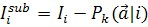
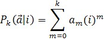
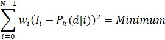
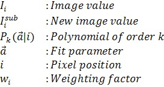
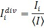
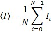

图像的每条线都减去一个k阶多项式。多项式的系数通过将多项式拟合到线数据来计算。




另请参阅
备注
平均扣除
平均扣除是上述公式的一个特例。这里多项式为零阶。多项式是一个常数，等于图像数值的平均值。

平均除法
不是从线数据中减去平均值，而是将线数据除以平均值。


斜率扣除
斜率扣除是上述公式的一个特例。这里多项式为一阶（直线）。

加权因子
使用加权因子可确保计算出的斜率平行于某个平坦表面。通常加权因子是由用户设置的布尔掩模。